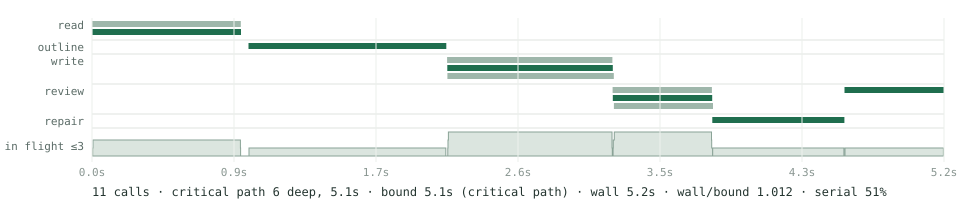

Guides & flashcards
Reference documents with source passages, or decks you can import into Anki.
Open source · Python 3.11+ · MIT
Flashcards, reference guides, podcast scripts and practice exams from your own documents, made by parallel model calls that each own one bounded passage.
Every sentence cites the span it came from and code materializes the quotation. Every run measures its own schedule against the bound it cannot beat. Nothing is deleted on a similarity score alone.
Install LaminaThe planned route. Flashcards take the two-call sweep:
read straight to cards, then a sampled audit.
What the code enforces
A citation names a span the request rendered. Sources are split into sentence spans that partition the text exactly. Readers cite span IDs; the validator indexes only the spans the request showed, so a citation of a sentence the halo cut off is rejected rather than quietly resolved.
Every extracted idea has one owner or an explicit omission. The outline assigns each idea to exactly one section or lists it as omitted with a reason. Coverage is computed from that partition, never from the prose.
Similarity may nominate; it may not delete. A card leaves a deck only by identical text, or by a similarity score plus agreement on numbers, negations, abbreviations, units and word order. "0.1 mg" and "1 mg" score 1.0 and are both kept.
Each invariant has a property-based test that searches generated inputs for a counterexample.
Read the invariantsWhat every receipt measures
Total model time over the worker limit, or the critical path, whichever is longer. No schedule beats it. Each receipt reports both terms, the measured wall, their ratio, calls in flight and the time spent serial, computed from the run's own call records and the dependencies the planner declared.

lamina demo --synthetic-latency: the bundled two-note fixture with a scripted adapter that sleeps a fixed time per stage, so the shape is real and the seconds are not; the receipt says so. Critical path read → outline → write → review → repair → recheck, bound 5.1 s, wall 5.2 s, wall/bound 1.012.Reference documents with source passages, or decks you can import into Anki.
Episode plans, scripts and audio. Speech generation uses a separate adapter.
Candidate material and a separate marking guide, with blind solving and examiner checks.
Get started
Generation requires an LLM connection and its credentials. Configure an adapter in models.json, then open http://127.0.0.1:8048. Without a model, lamina demo runs the engine on a bundled fixture and writes a document, its plan and its receipt.
git clone https://github.com/FadiBahodi/lamina.git
cd lamina
python -m venv .venv
source .venv/bin/activate
pip install '.[pdf,slides,http,tokens]'
lamina demo --synthetic-latency --output demo
# After configuring models.json:
lamina app --adapter @models.jsonWindows: activate with .venv\Scripts\activate.